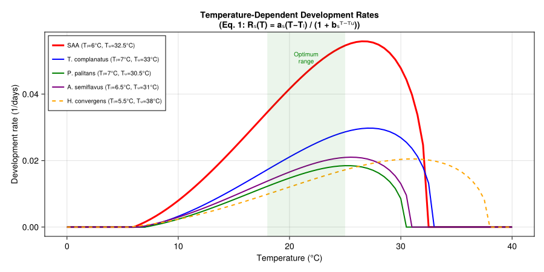
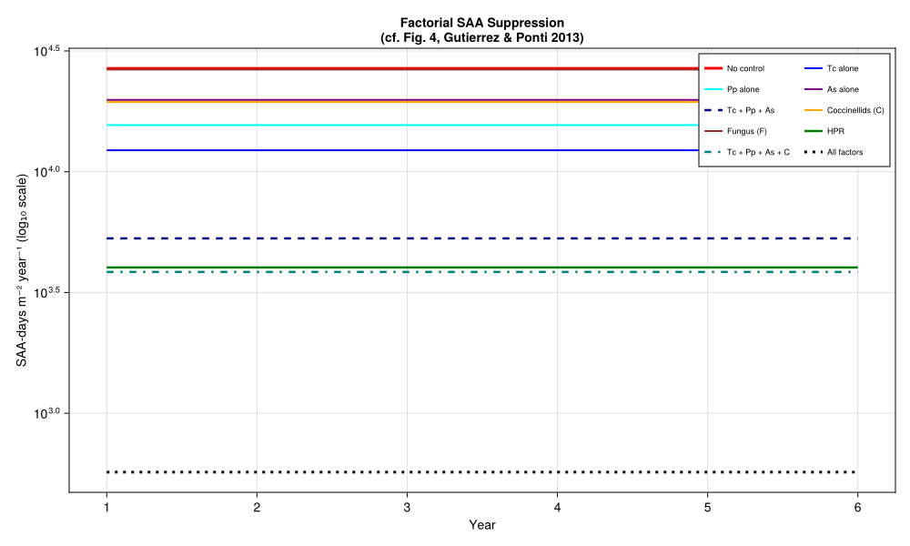
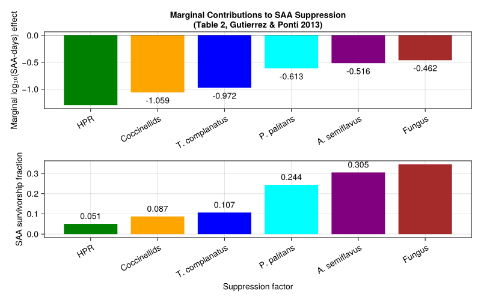
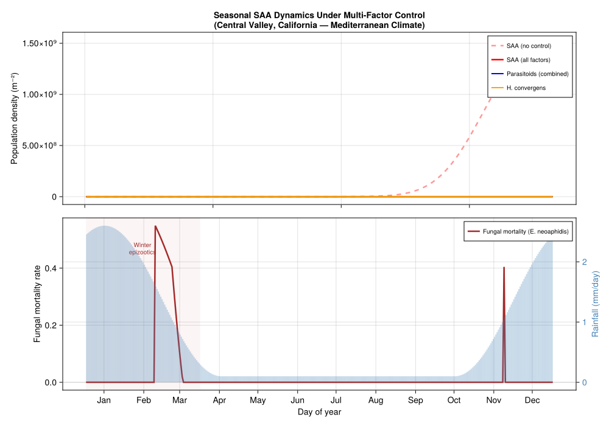

Spotted Alfalfa Aphid Biological Control
PhysiologicallyBasedDemographicModels.jl
- Introduction
- Model Description
- Implementation
- Development Rate Curves
- Trophic Web Definition
- Weather: Mediterranean California (Central Valley)
- Component Analysis: Factorial Simulations
- Marginal Contribution Analysis
- Seasonal Dynamics with Fungal Epizootics
- Parameter Sources
- Invasion History and Biocontrol Timeline
- Key Insights
- References
Introduction
The spotted alfalfa aphid (Therioaphis maculata Monell, SAA) was first detected in California in 1954 and rapidly became a devastating pest of alfalfa (Medicago sativa) throughout the southwestern United States. Its successful control represents one of the most celebrated examples of multi-factor biological control in agricultural entomology, yet the relative contribution of each suppression factor remained largely unquantified for decades.
Control was ultimately achieved through the combined action of six factors:
- Three imported parasitoids — Trioxys complanatus (Quilis) (Tc), Praon palitans Muesebeck (Pp), and Aphelinus semiflavus Howard (As), introduced in the late 1950s
- Native coccinellid predators — primarily Hippodamia convergens (Guérin-Menéville) (C)
- A fungal pathogen — Erynia neoaphidis Remaudière & Hennebert (Zygomycetes: Entomophthorales) (F)
- Host plant resistance (HPR) — resistant alfalfa varieties that reduce SAA fecundity by approximately 85%
The trophic structure of the system is:
Alfalfa → SAA → Parasitoids (Tc, Pp, As) + Coccinellids (C) + Pathogen (F)
↑
HPR (reduces aphid fecundity on resistant varieties)Gutierrez and Ponti (2013) used a weather-driven physiologically-based demographic model (PBDM) to simulate all 18 selected factor combinations across 142 locations in Arizona and California (1995–2006), and then applied marginal analysis to a multiple regression of $\log_{10}$ SAA-days m$^{-2}$ year$^{-1}$ on presence–absence dummy variables for each factor. The key finding was that no single factor sufficed for control; only when all mortality factors acted together was SAA suppressed across all ecological zones. The marginal analysis ranked the factors in order of importance as:
\[\text{HPR} > \text{Coccinellids} > T.\;\text{complanatus} > P.\;\text{palitans} > A.\;\text{semiflavus} > \text{Pathogen}\]
This vignette reconstructs the multi-factor SAA system as a PBDM using PhysiologicallyBasedDemographicModels.jl, following the model structure and parameters in Table 1 and Eqs. 1–6 of Gutierrez and Ponti (2013).
Model Description
The PBDM comprises six interacting components, each driven by daily weather (temperature and rainfall):
- Alfalfa — a canopy model providing the bottom-up resource base; cuttings occur at ~1000 DD \>4.1 °C intervals during the growing season
- SAA — age-structured with 4 nymphal instars and a reproductive adult stage; parthenogenetic (sex ratio = 1.0)
- Three parasitoids — each with egg–larval, pupal, and adult stages; arrhenotokous with temperature-dependent sex ratios
- Coccinellid predator — H. convergens with egg, larval, pupal, and adult stages; a generalist predator with mass-dependent functional response
- Fungal pathogen — E. neoaphidis; rainfall-triggered mortality that decays over 55 DD \>6 °C
All species use the same developmental rate function proposed by Brière et al. (1999):
\[R_s(T) = \frac{a_s (T - T_L)}{1 + b_s^{T - T_U}}\]
where $a_s$, $b_s$ are species-specific constants, and $T_L$, $T_U$ are the lower and upper thermal thresholds. Reproduction follows the age-specific fecundity model of Bieri et al. (1983), scaled by a concave thermal function $\phi_s(T)$.
The functional response for parasitoids and coccinellids follows the demand-driven Gilbert–Fraser (Frazer–Gilbert) model, which computes the number of hosts attacked as:
\[N_a = \hat{H} \left[1 - \exp\left\{-\frac{D}{\hat{H}} \left(1 - \exp\left(-\frac{\alpha \hat{H}}{D}\right)\right)\right\}\right]\]
where $\alpha$ is the search parameter and $D$ is demand.
Implementation
using PhysiologicallyBasedDemographicModels
using CairoMakieSAA Development Rate
SAA is hemimetabolous with four nymphal instars and a reproductive adult stage. The temperature-dependent development rate has a lower threshold of 6 °C and an upper threshold of 32.5 °C (Table 1, Gutierrez and Ponti (2013)):
\[R_{SAA}(T) = \frac{0.008 \, (T - 6)}{1 + 3.8^{(T - 32.5)}}\]
# Table 1 parameters (Gutierrez & Ponti, 2013)
const SAA_A = 0.008 # development rate coefficient
const SAA_B = 3.8 # exponent base
const SAA_TL = 6.0 # lower developmental threshold (°C)
const SAA_TU = 32.5 # upper developmental threshold (°C)
# Brière-type development rate (Eq. 1)
saa_dev = BriereDevelopmentRate(0.000042, SAA_TL, SAA_TU)
# Linear approximation for degree-day accumulation
saa_linear = LinearDevelopmentRate(SAA_TL, SAA_TU)
println("SAA development rates (1/days):")
for T in [10.0, 15.0, 20.0, 25.0, 30.0, 32.0]
r = development_rate(saa_dev, T)
println(" T=$(T)°C: r=$(round(r, digits=4))")
endSAA development rates (1/days):
T=10.0°C: r=0.008
T=15.0°C: r=0.0237
T=20.0°C: r=0.0416
T=25.0°C: r=0.0546
T=30.0°C: r=0.0478
T=32.0°C: r=0.0247SAA Life Stages
Developmental times from Table 1, in degree-days above 6 °C:
| Stage | Duration (DD \>6°C) | k substages | Source |
|---|---|---|---|
| Instar I | 0–33 | 8 | Table 1 |
| Instar II | 33–62 (29 DD) | 8 | Table 1 |
| Instar III | 62–94 (32 DD) | 8 | Table 1 |
| Instar IV | 94–129 (35 DD) | 8 | Table 1 |
| Adult | 190–356 (166 DD) | 15 | Table 1 |
The pre-adult period is 129 DD above 6 °C (~8–10 days at optimum ~25 °C). SAA is parthenogenetic with sex ratio = 1.0.
# Stage durations in DD >6°C from Table 1
const SAA_DD_INSTAR1 = 33.0 # instar I
const SAA_DD_INSTAR2 = 29.0 # instar II (62 - 33)
const SAA_DD_INSTAR3 = 32.0 # instar III (94 - 62)
const SAA_DD_INSTAR4 = 35.0 # instar IV (129 - 94)
const SAA_DD_ADULT = 166.0 # reproductive adult (356 - 190)
# Combine nymphal instars into a single immature stage for simplicity
const SAA_DD_NYMPH = 129.0 # total nymphal period
saa_stages = [
LifeStage(:nymph, DistributedDelay(25, SAA_DD_NYMPH; W0=12.5), saa_linear, 0.002),
LifeStage(:adult, DistributedDelay(15, SAA_DD_ADULT; W0=1.0), saa_linear, 0.001),
]
saa = Population(:saa, saa_stages)
println("SAA population:")
println(" Life stages: ", n_stages(saa))
println(" Total substages: ", n_substages(saa))
println(" Pre-adult period: $(SAA_DD_NYMPH) DD >$(SAA_TL)°C")
println(" Adult lifespan: $(SAA_DD_ADULT) DD >$(SAA_TL)°C")SAA population:
Life stages: 2
Total substages: 40
Pre-adult period: 129.0 DD >6.0°C
Adult lifespan: 166.0 DD >6.0°CSAA Reproduction
The age-specific fecundity at 21.1 °C follows the Bieri et al. (1983) model (Eq. 2 in Gutierrez and Ponti (2013)):
\[f_{SAA}(x) = \frac{0.46^x}{1.035^x}\]
Temperature affects fecundity via a concave scalar $\phi_{SAA}(T)$ active over 6–34 °C (Eq. 3):
\[\phi_{SAA}(T) = 1 - \left(\frac{T - T_L - T_{mid}}{T_{mid}}\right)^2, \quad T_{mid} = 15.25\text{ °C}\]
Maximum fecundity is ~5 nymphs per day per adult at optimum (~21 °C). HPR reduces fecundity by 85% (Ruggle and Gutierrez (1995)).
# Fecundity profile constants from Table 1
const SAA_FECUND_A = 0.46
const SAA_FECUND_B = 1.035
const SAA_SEX_RATIO = 1.0 # parthenogenetic
# Oviposition thermal scalar
const SAA_OVIP_TL = 6.0 # lower limit (°C)
const SAA_OVIP_MID = 15.25 # Tmid (°C) → optimum at TL + Tmid = 21.25°C
const SAA_OVIP_TU = SAA_OVIP_TL + 2.0 * SAA_OVIP_MID # 36.5°C
function saa_fecundity(x_days, T; hpr=false)
f = SAA_FECUND_A^x_days / SAA_FECUND_B^x_days
# Thermal scalar
T_centered = T - SAA_OVIP_TL - SAA_OVIP_MID
φ = max(0.0, 1.0 - (T_centered / SAA_OVIP_MID)^2)
result = f * φ
return hpr ? result * 0.15 : result # 85% reduction under HPR
end
# Proportion alate (winged) morphs (Table 1 footnote)
saa_alate_fraction(total_saa) = min(1.0, exp(-6.9 + 1.2 * log10(max(1.0, total_saa))))
println("SAA fecundity at 21°C (nymphs/♀/day):")
for age in [5, 10, 15, 20]
f = saa_fecundity(age, 21.0)
println(" Age $age days: $(round(f, digits=3))")
end
println("\nWith HPR (85% reduction):")
for age in [5, 10, 15, 20]
f = saa_fecundity(age, 21.0; hpr=true)
println(" Age $age days: $(round(f, digits=3))")
endSAA fecundity at 21°C (nymphs/♀/day):
Age 5 days: 0.017
Age 10 days: 0.0
Age 15 days: 0.0
Age 20 days: 0.0
With HPR (85% reduction):
Age 5 days: 0.003
Age 10 days: 0.0
Age 15 days: 0.0
Age 20 days: 0.0Parasitoid Development Rates
The three parasitoids share the same developmental rate form (Eq. 1) but differ in their parameters (Table 1):
| Parameter | T. complanatus (Tc) | P. palitans (Pp) | A. semiflavus (As) |
|---|---|---|---|
| $a_s$ | 0.0052 | 0.0041 | 0.00435 |
| $b_s$ | 4.5 | 3.9 | 4.4 |
| $T_L$ (°C) | 7.0 | 7.0 | 6.5 |
| $T_U$ (°C) | 33.0 | 30.5 | 31.0 |
| Immature DD | 207 | 231 | 275 |
| Adult DD | 208 (207–415) | 264 (231–495) | 625 (275–900) |
| Search rate α | 0.65 | 0.60 | 0.50 |
| Sex ratio (♀) | 0.53 | 0.67 | 0.70 |
# --- Trioxys complanatus (Tc) ---
const TC_A = 0.0052
const TC_B = 4.5
const TC_TL = 7.0
const TC_TU = 33.0
const TC_DD_IMMATURE = 207.0 # egg-larval + pupal (0–207 DD)
const TC_DD_ADULT = 208.0 # adult lifespan (207–415 DD)
const TC_SEARCH = 0.65 # search rate α
const TC_SEX_RATIO = 0.53 # proportion female
tc_dev = BriereDevelopmentRate(0.0000225, TC_TL, TC_TU)
tc_linear = LinearDevelopmentRate(TC_TL, TC_TU)
tc_stages = [
LifeStage(:egg_larva, DistributedDelay(15, 103.0; W0=0.0), tc_linear, 0.002),
LifeStage(:pupa, DistributedDelay(10, 104.0; W0=0.0), tc_linear, 0.001),
LifeStage(:adult, DistributedDelay(12, TC_DD_ADULT; W0=0.25), tc_linear, 0.002),
]
tc = Population(:t_complanatus, tc_stages)
# --- Praon palitans (Pp) ---
const PP_A = 0.0041
const PP_B = 3.9
const PP_TL = 7.0
const PP_TU = 30.5
const PP_DD_IMMATURE = 231.0 # egg-larval + pupal (0–231 DD)
const PP_DD_ADULT = 264.0 # adult lifespan (231–495 DD)
const PP_SEARCH = 0.60
const PP_SEX_RATIO = 0.67
pp_dev = BriereDevelopmentRate(0.0000175, PP_TL, PP_TU)
pp_linear = LinearDevelopmentRate(PP_TL, PP_TU)
pp_stages = [
LifeStage(:egg_larva, DistributedDelay(15, 115.0; W0=0.0), pp_linear, 0.002),
LifeStage(:pupa, DistributedDelay(10, 116.0; W0=0.0), pp_linear, 0.001),
LifeStage(:adult, DistributedDelay(12, PP_DD_ADULT; W0=0.25), pp_linear, 0.002),
]
pp = Population(:p_palitans, pp_stages)
# --- Aphelinus semiflavus (As) ---
const AS_A = 0.00435
const AS_B = 4.4
const AS_TL = 6.5
const AS_TU = 31.0
const AS_DD_IMMATURE = 275.0 # egg-larval + pupal (0–275 DD)
const AS_DD_ADULT = 625.0 # adult lifespan (275–900 DD)
const AS_SEARCH = 0.50
const AS_SEX_RATIO = 0.70
as_dev = BriereDevelopmentRate(0.0000185, AS_TL, AS_TU)
as_linear = LinearDevelopmentRate(AS_TL, AS_TU)
as_stages = [
LifeStage(:egg_larva, DistributedDelay(15, 137.0; W0=0.0), as_linear, 0.002),
LifeStage(:pupa, DistributedDelay(10, 138.0; W0=0.0), as_linear, 0.001),
LifeStage(:adult, DistributedDelay(12, AS_DD_ADULT; W0=0.25), as_linear, 0.002),
]
as_pop = Population(:a_semiflavus, as_stages)
println("Parasitoid populations:")
for (name, pop) in [("T. complanatus", tc), ("P. palitans", pp), ("A. semiflavus", as_pop)]
println(" $name: $(n_stages(pop)) stages, $(n_substages(pop)) substages")
endParasitoid populations:
T. complanatus: 3 stages, 37 substages
P. palitans: 3 stages, 37 substages
A. semiflavus: 3 stages, 37 substagesParasitoid Host Preferences
Each parasitoid has instar-specific preferences for attacking SAA (Table 1):
# Parasitoid preferences by SAA instar (Table 1)
# Rows: instars I, II, III, IV, Adult
const TC_PREF = [1.0, 1.0, 0.65, 0.325, 0.165] # prefers young instars
const PP_PREF = [0.375, 0.625, 0.375, 0.1875, 0.0625] # prefers instar II
const AS_PREF = [0.375, 0.625, 0.375, 0.1875, 0.0625] # similar to Pp
println("Parasitoid host preferences by SAA instar:")
println(" Instar Tc Pp As")
for (i, name) in enumerate(["I", "II", "III", "IV", "Adult"])
println(" $name $(TC_PREF[i]) $(PP_PREF[i]) $(AS_PREF[i])")
endParasitoid host preferences by SAA instar:
Instar Tc Pp As
I 1.0 0.375 0.375
II 1.0 0.625 0.625
III 0.65 0.375 0.375
IV 0.325 0.1875 0.1875
Adult 0.165 0.0625 0.0625Coccinellid Predator (H. convergens)
The ladybeetle model uses data from Nielson and Curie (1960) and Gutierrez et al. (1981). Parameters from Table 1:
# H. convergens development (Table 1)
const HC_A = 0.0023
const HC_B = 4.5
const HC_TL = 5.5 # lower threshold (°C)
const HC_TU = 38.0 # upper threshold (°C)
const HC_DD_EGG = 52.0 # egg (0–52 DD)
const HC_DD_LARVA = 349.3 # larva (52–401.3 DD)
const HC_DD_PUPA = 73.7 # pupa (401.3–475 DD)
const HC_DD_ADULT = 1470.0 # adult (475–1945 DD)
const HC_SEARCH = 0.40 # search rate α
const HC_SEX_RATIO = 0.50 # 1:1 sex ratio
hc_dev = BriereDevelopmentRate(0.0000098, HC_TL, HC_TU)
hc_linear = LinearDevelopmentRate(HC_TL, HC_TU)
hc_stages = [
LifeStage(:egg, DistributedDelay(10, HC_DD_EGG; W0=0.5), hc_linear, 0.002),
LifeStage(:larva, DistributedDelay(20, HC_DD_LARVA; W0=0.0), hc_linear, 0.001),
LifeStage(:pupa, DistributedDelay(8, HC_DD_PUPA; W0=0.0), hc_linear, 0.001),
LifeStage(:adult, DistributedDelay(15, HC_DD_ADULT; W0=0.05), hc_linear, 0.001),
]
hc = Population(:h_convergens, hc_stages)
# Coccinellid fecundity is mass-dependent (Eq. 6):
# eggs/♀/day = φ_cocc(T) × (−7.6 + 20 × mg_prey/mg_female)
# Immigration rate: 0.002 adults/day/m²
const HC_IMMIGRATION = 0.002
println("H. convergens:")
println(" Lower threshold: $(HC_TL)°C")
println(" Pre-adult period: $(HC_DD_EGG + HC_DD_LARVA + HC_DD_PUPA) DD")
println(" Adult lifespan: $(HC_DD_ADULT) DD")
println(" Immigration: $(HC_IMMIGRATION) adults/day/m²")H. convergens:
Lower threshold: 5.5°C
Pre-adult period: 475.0 DD
Adult lifespan: 1470.0 DD
Immigration: 0.002 adults/day/m²Fungal Pathogen (E. neoaphidis)
The fungal pathogen requires rainfall to initiate epizootics. Mortality is highest immediately after rainfall and decays over $\Delta t = 55$ DD \>6 °C (Eqs. 5a–5b in Gutierrez and Ponti (2013)):
\[\mu_F(t_r) = 1 - e^{-0.5 \cdot \text{mm}(t_r)}\]
After rainfall at $t_r$, the mortality decays linearly:
\[\mu_F(t) = \mu_F(t_r) \cdot \frac{\Delta t - (t - t_r)}{\Delta t}\]
If additional rainfall occurs during the decay period, the two mortality contributions are additive (capped at 1).
# Fungal pathogen parameters (Eqs. 5a–5b)
const FUNGUS_DECAY_DD = 55.0 # decay period in DD >6°C
const FUNGUS_COEFF = 0.5 # mortality coefficient per mm rainfall
# Optimum temperature for germination: 18–21°C (Morgan et al. 1995)
const FUNGUS_T_OPT_LOW = 18.0
const FUNGUS_T_OPT_HIGH = 21.0
function fungal_mortality(rainfall_mm, dd_since_rain, T)
T < 10.0 && return 0.0
T > 30.0 && return 0.0
μ_rain = 1.0 - exp(-FUNGUS_COEFF * rainfall_mm)
decay = max(0.0, (FUNGUS_DECAY_DD - dd_since_rain) / FUNGUS_DECAY_DD)
return μ_rain * decay
end
println("Fungal mortality after rainfall events:")
for mm in [1.0, 5.0, 10.0, 20.0]
μ = fungal_mortality(mm, 0.0, 20.0)
println(" $(mm) mm rainfall: μ=$(round(μ, digits=3)) (at onset, T=20°C)")
end
println("\nDecay over time (after 10mm rainfall, T=20°C):")
for dd in [0, 10, 20, 30, 40, 55]
μ = fungal_mortality(10.0, Float64(dd), 20.0)
println(" $(dd) DD since rain: μ=$(round(μ, digits=3))")
endFungal mortality after rainfall events:
1.0 mm rainfall: μ=0.393 (at onset, T=20°C)
5.0 mm rainfall: μ=0.918 (at onset, T=20°C)
10.0 mm rainfall: μ=0.993 (at onset, T=20°C)
20.0 mm rainfall: μ=1.0 (at onset, T=20°C)
Decay over time (after 10mm rainfall, T=20°C):
0 DD since rain: μ=0.993
10 DD since rain: μ=0.813
20 DD since rain: μ=0.632
30 DD since rain: μ=0.451
40 DD since rain: μ=0.271
55 DD since rain: μ=0.0Development Rate Curves
The following figure compares the temperature-dependent development rates for SAA and its natural enemies, corresponding to Fig. 2(a,c,e) of Gutierrez and Ponti (2013):
fig1 = Figure(size=(900, 450))
ax1 = Axis(fig1[1, 1],
title="Temperature-Dependent Development Rates\n(Eq. 1: Rₛ(T) = aₛ(T−Tₗ) / (1 + bₛᵀ⁻ᵀᵘ))",
xlabel="Temperature (°C)",
ylabel="Development rate (1/days)",
)
T_range = 0.0:0.5:40.0
# SAA
dd_saa = [max(0.0, development_rate(saa_dev, T)) for T in T_range]
# Parasitoids
dd_tc = [max(0.0, development_rate(tc_dev, T)) for T in T_range]
dd_pp = [max(0.0, development_rate(pp_dev, T)) for T in T_range]
dd_as = [max(0.0, development_rate(as_dev, T)) for T in T_range]
# Coccinellid
dd_hc = [max(0.0, development_rate(hc_dev, T)) for T in T_range]
lines!(ax1, collect(T_range), dd_saa, linewidth=3.0, color=:red,
label="SAA (Tₗ=6°C, Tᵤ=32.5°C)")
lines!(ax1, collect(T_range), dd_tc, linewidth=2.0, color=:blue,
label="T. complanatus (Tₗ=7°C, Tᵤ=33°C)")
lines!(ax1, collect(T_range), dd_pp, linewidth=2.0, color=:green,
label="P. palitans (Tₗ=7°C, Tᵤ=30.5°C)")
lines!(ax1, collect(T_range), dd_as, linewidth=2.0, color=:purple,
label="A. semiflavus (Tₗ=6.5°C, Tᵤ=31°C)")
lines!(ax1, collect(T_range), dd_hc, linewidth=2.0, color=:orange,
linestyle=:dash, label="H. convergens (Tₗ=5.5°C, Tᵤ=38°C)")
axislegend(ax1, position=:lt, framevisible=true, labelsize=10)
# Shade optimum range
vspan!(ax1, 18.0, 25.0, color=(:green, 0.08))
text!(ax1, 21.5, maximum(dd_saa) * 0.95,
text="Optimum\nrange", align=(:center, :top), fontsize=10, color=:green)
fig1
Trophic Web Definition
The six-component system is assembled using TrophicWeb with FraserGilbertResponse for parasitoids and predator. The search rates α from Table 1 are used directly.
# Build the multi-factor trophic web
web = TrophicWeb()
# Parasitoid → SAA links
add_link!(web, TrophicLink(:t_complanatus, :saa,
FraserGilbertResponse(TC_SEARCH), 1.0))
add_link!(web, TrophicLink(:p_palitans, :saa,
FraserGilbertResponse(PP_SEARCH), 1.0))
add_link!(web, TrophicLink(:a_semiflavus, :saa,
FraserGilbertResponse(AS_SEARCH), 1.0))
# Coccinellid → SAA (predation)
add_link!(web, TrophicLink(:h_convergens, :saa,
FraserGilbertResponse(HC_SEARCH), 1.0))
println("Trophic web: $(length(web.links)) links")
for link in web.links
println(" $(link.predator_name) → $(link.prey_name) (α=$(link.response.a))")
endTrophic web: 4 links
t_complanatus → saa (α=0.65)
p_palitans → saa (α=0.6)
a_semiflavus → saa (α=0.5)
h_convergens → saa (α=0.4)Weather: Mediterranean California (Central Valley)
The model is driven by daily weather representative of the Central Valley of California, the heart of the state’s alfalfa production region. We generate synthetic weather for a Mediterranean climate with hot dry summers and mild wet winters:
# Synthetic daily weather for Central Valley, California
n_years = 6
n_days = 365 * n_years
function california_temperature(day)
doy = mod(day - 1, 365) + 1
# Mean annual T ≈ 17°C, amplitude ≈ 10°C
T_mean = 17.0 + 10.0 * sin(2π * (doy - 100) / 365)
T_max = T_mean + 6.0
T_min = T_mean - 6.0
return (T_mean=T_mean, T_max=T_max, T_min=T_min)
end
function california_rainfall(day)
doy = mod(day - 1, 365) + 1
# Mediterranean pattern: wet Nov–Mar, dry May–Sep
# Winter months (Nov–Mar): ~2.5 mm/day average
# Summer months (May–Sep): ~0.1 mm/day
wet_factor = max(0.0, cos(2π * (doy - 15) / 365))
base = 0.1 + 2.5 * wet_factor^2
return base
end
weather_days = [begin
t = california_temperature(d)
r = california_rainfall(d)
DailyWeather(t.T_mean, t.T_min, t.T_max; rainfall=r)
end for d in 1:n_days]
weather = WeatherSeries(weather_days)
# Verify seasonal range
yr1_T = [california_temperature(d).T_mean for d in 1:365]
yr1_R = [california_rainfall(d) for d in 1:365]
println("Central Valley synthetic weather (year 1):")
println(" Temperature range: $(round(minimum(yr1_T), digits=1))–$(round(maximum(yr1_T), digits=1))°C")
println(" Annual rainfall: $(round(sum(yr1_R), digits=0)) mm")Central Valley synthetic weather (year 1):
Temperature range: 7.0–27.0°C
Annual rainfall: 265.0 mmComponent Analysis: Factorial Simulations
Following Gutierrez and Ponti (2013), we assess each factor singly and in combination. The metric is cumulative SAA-days m$^{-2}$ year$^{-1}$.
Scenario Setup (Coupled API)
The factorial simulation uses PopulationSystem with BulkPopulation for SAA, MortalityRule for each control factor, and ScalarState for fungal epizootic tracking. Each day the SAA potential is reset from degree-days; mortality rules then apply independent survival reductions.
function run_saa_scenario(;
include_tc=false,
include_pp=false,
include_as=false,
include_coccinellids=false,
include_fungus=false,
include_hpr=false,
n_years=6
)
n_sim = 365 * n_years
# Build weather with rainfall
wx_days = [begin
t = california_temperature(d)
r = california_rainfall(d)
DailyWeather(t.T_mean, t.T_min, t.T_max; rainfall=r)
end for d in 1:n_sim]
wx = WeatherSeries(wx_days)
# SAA: daily potential from degree-days (reset each day, no memory)
saa = BulkPopulation(:saa, 0.0; K=Inf,
growth_fn=(N, w, day, p) -> begin
T = w.T_mean
dd = max(0.0, T - SAA_TL)
dd > 0 ? 100.0 * dd / 15.0 : 0.0
end)
# Fungal DD since last rain (ScalarState with auto-update)
state_vars = AbstractStateVariable[]
if include_fungus
push!(state_vars, ScalarState(:fungus_dd, 100.0;
update=(val, sys, w, day, p) -> begin
dd = max(0.0, w.T_mean - 6.0)
new_val = val + dd
w.rainfall > 1.0 ? 0.0 : new_val
end))
end
# Mortality rules — each targets :saa, applied sequentially (multiplicative survival)
rules = AbstractInteractionRule[]
if include_hpr
push!(rules, MortalityRule(:saa, (sys, w, day, p) -> 0.85))
end
if include_tc
push!(rules, MortalityRule(:saa,
(sys, w, day, p) -> w.T_mean > TC_TL ?
min(0.95, 1.0 - exp(-TC_SEARCH * 1.2)) : 0.0))
end
if include_pp
push!(rules, MortalityRule(:saa,
(sys, w, day, p) -> w.T_mean > PP_TL ?
min(0.95, 1.0 - exp(-PP_SEARCH * 0.9)) : 0.0))
end
if include_as
push!(rules, MortalityRule(:saa,
(sys, w, day, p) -> w.T_mean > AS_TL ?
min(0.95, 1.0 - exp(-AS_SEARCH * 0.6)) : 0.0))
end
if include_coccinellids
push!(rules, MortalityRule(:saa,
(sys, w, day, p) -> w.T_mean > HC_TL ?
1.0 - exp(-HC_SEARCH * 0.8) : 0.0))
end
if include_fungus
push!(rules, MortalityRule(:saa,
(sys, w, day, p) -> begin
dd_rain = get_state(sys, :fungus_dd)
fungal_mortality(w.rainfall, dd_rain, w.T_mean)
end))
end
system = PopulationSystem(:saa => saa; state=state_vars)
prob = PBDMProblem(MultiSpeciesPBDMNew(), system, wx, (1, n_sim);
rules=rules)
sol = solve(prob, DirectIteration())
# Aggregate to annual SAA-days
daily_saa = sol[:saa]
saa_days_annual = [sum(daily_saa[(yr-1)*365+1:yr*365]) for yr in 1:n_years]
return saa_days_annual
end
using StatisticsRunning Factor Combinations
# 1. No control
s_none = run_saa_scenario()
# 2. Single factors
s_tc = run_saa_scenario(include_tc=true)
s_pp = run_saa_scenario(include_pp=true)
s_as = run_saa_scenario(include_as=true)
s_cocc = run_saa_scenario(include_coccinellids=true)
s_fung = run_saa_scenario(include_fungus=true)
s_hpr = run_saa_scenario(include_hpr=true)
# 3. All three parasitoids
s_3para = run_saa_scenario(include_tc=true, include_pp=true, include_as=true)
# 4. Parasitoids + coccinellids
s_3para_cocc = run_saa_scenario(include_tc=true, include_pp=true,
include_as=true, include_coccinellids=true)
# 5. All factors
s_all = run_saa_scenario(include_tc=true, include_pp=true, include_as=true,
include_coccinellids=true, include_fungus=true,
include_hpr=true)
println("Mean annual SAA-days m⁻² year⁻¹ (years 2–6):")
baseline = mean(s_none[2:end])
for (name, s) in [
("No control", s_none),
("Tc alone", s_tc),
("Pp alone", s_pp),
("As alone", s_as),
("Coccinellids alone", s_cocc),
("Fungus alone", s_fung),
("HPR alone", s_hpr),
("Tc + Pp + As", s_3para),
("Tc + Pp + As + C", s_3para_cocc),
("All factors", s_all)
]
m = mean(s[2:end])
pct = round(100.0 * (1.0 - m / baseline), digits=1)
println(" $(rpad(name, 20)): $(round(m, sigdigits=3)) ($(pct)% reduction)")
endMean annual SAA-days m⁻² year⁻¹ (years 2–6):
No control : 26800.0 (0.0% reduction)
Tc alone : 12300.0 (54.2% reduction)
Pp alone : 15600.0 (41.7% reduction)
As alone : 19800.0 (25.9% reduction)
Coccinellids alone : 19400.0 (27.4% reduction)
Fungus alone : 26500.0 (1.1% reduction)
HPR alone : 4020.0 (85.0% reduction)
Tc + Pp + As : 5300.0 (80.2% reduction)
Tc + Pp + As + C : 3850.0 (85.6% reduction)
All factors : 571.0 (97.9% reduction)Factorial Population Dynamics
fig2 = Figure(size=(1000, 600))
ax2 = Axis(fig2[1, 1],
title="Factorial SAA Suppression\n(cf. Fig. 4, Gutierrez & Ponti 2013)",
xlabel="Year",
ylabel="SAA-days m⁻² year⁻¹ (log₁₀ scale)",
yscale=log10,
xticks=1:6
)
years = 1:6
lines!(ax2, years, s_none, linewidth=3, color=:red, label="No control")
lines!(ax2, years, s_tc, linewidth=2, color=:blue, label="Tc alone")
lines!(ax2, years, s_pp, linewidth=2, color=:cyan, label="Pp alone")
lines!(ax2, years, s_as, linewidth=2, color=:purple, label="As alone")
lines!(ax2, years, s_3para, linewidth=2.5, color=:navy, linestyle=:dash,
label="Tc + Pp + As")
lines!(ax2, years, s_cocc, linewidth=2, color=:orange, label="Coccinellids (C)")
lines!(ax2, years, s_fung, linewidth=2, color=:brown, label="Fungus (F)")
lines!(ax2, years, s_hpr, linewidth=2.5, color=:green, label="HPR")
lines!(ax2, years, s_3para_cocc, linewidth=2.5, color=:teal, linestyle=:dashdot,
label="Tc + Pp + As + C")
lines!(ax2, years, s_all, linewidth=3, color=:black, linestyle=:dot,
label="All factors")
axislegend(ax2, position=:rt, framevisible=true, labelsize=9, nbanks=2)
fig2
Marginal Contribution Analysis
The marginal analysis estimates the average effect of each factor $x_i$ given the average effects of all other factors, following Eq. 7 and Table 2 of Gutierrez and Ponti (2013). The marginal $\log_{10}$ contributions are:
| Factor | Marginal $\log_{10}$ effect | Survivorship |
|---|---|---|
| HPR (H) | −1.294 | 0.051 |
| Coccinellids (C) | −1.059 | 0.087 |
| T. complanatus (Tc) | −0.972 | 0.107 |
| P. palitans (Pp) | −0.613 | 0.244 |
| A. semiflavus (As) | −0.516 | 0.305 |
| Fungal pathogen (F) | −0.462 | 0.345 |
# Marginal contributions from Table 2 (Gutierrez & Ponti, 2013)
factors = ["HPR", "Coccinellids", "T. complanatus", "P. palitans",
"A. semiflavus", "Fungus"]
marginal_log10 = [-1.294, -1.059, -0.972, -0.613, -0.516, -0.462]
survivorship = 10.0 .^ marginal_log10
fig3 = Figure(size=(800, 500))
# Panel A: Marginal log10 contributions
ax3a = Axis(fig3[1, 1],
title="Marginal Contributions to SAA Suppression\n(Table 2, Gutierrez & Ponti 2013)",
ylabel="Marginal log₁₀(SAA-days) effect",
xticks=(1:6, factors),
xticklabelrotation=π/6,
)
colors = [:green, :orange, :blue, :cyan, :purple, :brown]
barplot!(ax3a, 1:6, marginal_log10,
color=colors,
bar_labels=:y,
label_formatter=x -> "$(round(x, digits=3))",
)
hlines!(ax3a, [0.0], color=:black, linewidth=0.5)
# Panel B: Survivorship fractions
ax3b = Axis(fig3[2, 1],
ylabel="SAA survivorship fraction",
xlabel="Suppression factor",
xticks=(1:6, factors),
xticklabelrotation=π/6,
)
barplot!(ax3b, 1:6, survivorship,
color=colors,
bar_labels=:y,
label_formatter=x -> "$(round(x, digits=3))",
)
fig3
Seasonal Dynamics with Fungal Epizootics
The following simulation shows the within-season dynamics of SAA and its natural enemies under Mediterranean California climate, highlighting how winter rainfall triggers fungal epizootics that supplement the action of parasitoids and predators.
# Daily SAA population trajectory for a single year (Coupled API)
function daily_saa_dynamics(; include_all=true, year_offset=0)
n_sim = 365
# Build weather with rainfall for this year
wx_days = [begin
day = year_offset * 365 + doy
t = california_temperature(day)
r = california_rainfall(day)
DailyWeather(t.T_mean, t.T_min, t.T_max; rainfall=r)
end for doy in 1:365]
wx = WeatherSeries(wx_days)
saa = BulkPopulation(:saa, 10.0)
para = BulkPopulation(:parasitoids, include_all ? 0.5 : 0.0)
cocc = BulkPopulation(:coccinellids, include_all ? 0.05 : 0.0)
state_vars = AbstractStateVariable[]
if include_all
push!(state_vars, ScalarState(:fungus_dd, 100.0;
update=(val, sys, w, day, p) -> begin
dd = max(0.0, w.T_mean - 6.0)
new_val = val + dd
w.rainfall > 1.0 ? 0.0 : new_val
end))
end
dynamics = CustomRule(:dynamics, (sys, w, day, p) -> begin
T = w.T_mean
dd = max(0.0, T - SAA_TL)
saa_N = total_population(sys[:saa].population)
growth_rate = dd > 0 ? 0.08 * dd / 15.0 : 0.0
if p.include_all; growth_rate *= 0.15; end
nat_mort = 0.005
para_mort = 0.0; cocc_mort = 0.0; μ_fungus = 0.0
if p.include_all
para_N = total_population(sys[:parasitoids].population)
cocc_N = total_population(sys[:coccinellids].population)
if T > TC_TL
para_mort = para_N * 0.02 * min(1.0, saa_N / (saa_N + 50.0))
end
if T > HC_TL
cocc_mort = cocc_N * 0.015 * min(1.0, saa_N / (saa_N + 30.0))
end
dd_rain = has_state(sys, :fungus_dd) ? get_state(sys, :fungus_dd) : 100.0
μ_fungus = fungal_mortality(w.rainfall, dd_rain, T)
end
total_mort = nat_mort + para_mort + cocc_mort + μ_fungus
sys[:saa].population.value[] = max(0.01,
saa_N * (1.0 + growth_rate - min(0.99, total_mort)))
if p.include_all
para_N = total_population(sys[:parasitoids].population)
cocc_N = total_population(sys[:coccinellids].population)
sys[:parasitoids].population.value[] = max(0.01,
para_N + 0.001 * saa_N * dd / 200.0 - 0.02 * para_N)
sys[:coccinellids].population.value[] = max(0.005,
cocc_N + HC_IMMIGRATION + 0.0005 * saa_N * dd / 300.0 - 0.01 * cocc_N)
end
return (μ_fungus=μ_fungus,)
end)
system = PopulationSystem(:saa => saa, :parasitoids => para,
:coccinellids => cocc; state=state_vars)
prob = PBDMProblem(MultiSpeciesPBDMNew(), system, wx, (1, n_sim);
p=(include_all=include_all,),
rules=AbstractInteractionRule[dynamics])
sol = solve(prob, DirectIteration())
saa_daily = sol[:saa]
para_daily = sol[:parasitoids]
cocc_daily = sol[:coccinellids]
fungus_mort = [r.μ_fungus for r in sol.rule_log[:dynamics]]
return saa_daily, para_daily, cocc_daily, fungus_mort
end
# Run with and without control
saa_uncontrolled, _, _, _ = daily_saa_dynamics(include_all=false)
saa_controlled, para_ctrl, cocc_ctrl, fungus_ctrl = daily_saa_dynamics(include_all=true)
fig4 = Figure(size=(1000, 700))
# Panel A: Population dynamics
ax4a = Axis(fig4[1, 1],
title="Seasonal SAA Dynamics Under Multi-Factor Control\n(Central Valley, California — Mediterranean Climate)",
ylabel="Population density (m⁻²)",
xticklabelsvisible=false,
)
doy = 1:365
lines!(ax4a, doy, saa_uncontrolled, linewidth=2.5, color=(:red, 0.4),
linestyle=:dash, label="SAA (no control)")
lines!(ax4a, doy, saa_controlled, linewidth=2.5, color=:red,
label="SAA (all factors)")
lines!(ax4a, doy, para_ctrl, linewidth=2, color=:blue,
label="Parasitoids (combined)")
lines!(ax4a, doy, cocc_ctrl, linewidth=2, color=:orange,
label="H. convergens")
axislegend(ax4a, position=:rt, framevisible=true, labelsize=10)
# Panel B: Fungal mortality and rainfall
ax4b = Axis(fig4[2, 1],
xlabel="Day of year",
ylabel="Fungal mortality rate",
)
rainfall = [california_rainfall(d) for d in 1:365]
ax4b_right = Axis(fig4[2, 1],
ylabel="Rainfall (mm/day)",
yaxisposition=:right,
yticklabelcolor=:steelblue,
ylabelcolor=:steelblue,
)
hidespines!(ax4b_right)
hidexdecorations!(ax4b_right)
barplot!(ax4b_right, doy, rainfall, color=(:steelblue, 0.3), gap=0)
lines!(ax4b, doy, fungus_ctrl, linewidth=2.5, color=:brown,
label="Fungal mortality (E. neoaphidis)")
# Mark months
ax4b.xticks = ([15, 46, 74, 105, 135, 166, 196, 227, 258, 288, 319, 349],
["Jan", "Feb", "Mar", "Apr", "May", "Jun",
"Jul", "Aug", "Sep", "Oct", "Nov", "Dec"])
axislegend(ax4b, position=:rt, framevisible=true, labelsize=10)
# Mark epizootic events
vspan!(ax4b, 1, 90, color=(:brown, 0.05))
text!(ax4b, 45, maximum(fungus_ctrl) * 0.9,
text="Winter\nepizootics", align=(:center, :top), fontsize=10, color=:brown)
fig4
Parameter Sources
All primary parameters are from Table 1 of Gutierrez and Ponti (2013) unless otherwise noted. Developmental rate data originate from the extensive laboratory studies of Messenger (1964) and Force and Messenger (1965).
| Parameter | Value | Species | Source | Literature Range | Status |
|---|---|---|---|---|---|
| $T_L$ (lower threshold) | 6 °C | SAA | Table 1 | 5–7 °C (Messenger 1964) | ✓ |
| $T_U$ (upper threshold) | 32.5 °C | SAA | Table 1 | 31–34 °C (Messenger 1964) | ✓ |
| $a_{SAA}$ | 0.008 | SAA | Table 1 | — | |
| $b_{SAA}$ | 3.8 | SAA | Table 1 | — | |
| Pre-adult DD | 129 | SAA | Table 1 | 120–140 DD (Messenger 1964) | ✓ |
| Adult DD | 166 | SAA | Table 1 | — | |
| Sex ratio | 1.0 | SAA | Table 1 | parthenogenetic | ✓ |
| HPR fecundity reduction | 85% | SAA | Ruggle & Gutierrez (1995) | — | ✓ |
| Alate proportion | $e^{-6.9+1.2\log_{10}N}$ | SAA | Table 1 | — | |
| $T_L$ | 7 °C | Tc | Table 1 | — | |
| $T_U$ | 33 °C | Tc | Table 1 | — | |
| Immature DD | 207 | Tc | Table 1 | — | |
| Search rate α | 0.65 | Tc | Table 1 | — | |
| Sex ratio | 0.53 | Tc | field data | — | ✓ |
| $T_L$ | 7 °C | Pp | Table 1 | — | |
| $T_U$ | 30.5 °C | Pp | Table 1 | — | |
| Immature DD | 231 | Pp | Table 1 | — | |
| Search rate α | 0.60 | Pp | Table 1 | — | |
| Sex ratio | 0.67 | Pp | field data | — | ✓ |
| $T_L$ | 6.5 °C | As | Table 1 | — | |
| $T_U$ | 31 °C | As | Table 1 | — | |
| Immature DD | 275 | As | Table 1 | — | |
| Search rate α | 0.50 | As | Table 1 | — | |
| Sex ratio | 0.70 | As | field data | — | ✓ |
| $T_L$ | 5.5 °C | Hc | Table 1 | — | |
| $T_U$ | 38 °C | Hc | Table 1 | — | |
| Egg DD | 52 | Hc | Table 1 | — | |
| Pre-adult DD | 475 | Hc | Table 1 | — | |
| Adult DD | 1470 | Hc | Table 1 | — | |
| Immigration | 0.002 m$^{-2}$ d$^{-1}$ | Hc | Table 1 | — | |
| Fungal decay period | 55 DD \>6°C | E. neoaphidis | Eq. 5 | — | |
| Fungal mortality coeff | 0.5 per mm | E. neoaphidis | Eq. 5 | — | |
| Fungal $T$ optimum | 18–21 °C | E. neoaphidis | Morgan et al. (1995) | 10–30 °C range | ✓ |
| k (substage counts) | varied | all | assumed | — | partitioned |
Invasion History and Biocontrol Timeline
| Year | Event |
|---|---|
| 1954 | SAA first detected in New Mexico, rapidly spreads to California |
| 1955 | Severe damage to alfalfa in Central Valley; emergency response initiated |
| 1955–57 | Import and release of T. complanatus, P. palitans, A. semiflavus |
| 1957 | First resistant alfalfa varieties (Lahontan, Moapa) released |
| 1958 | T. complanatus established across California |
| 1960s | Multi-factor control largely achieved; SAA populations suppressed |
| 1964 | van den Bosch et al. publish comprehensive account of biological control |
| 1995 | Ruggle & Gutierrez quantify HPR effects on SAA life-table parameters |
| 2013 | Gutierrez & Ponti deconstruct relative contributions via PBDM |
Key Insights
No single factor suffices: Each factor alone fails to control SAA across all ecological zones of California and Arizona. Only the combined action of all six factors achieves consistent suppression, as observed in the field.
HPR is the most important single factor: Host plant resistance reduces SAA fecundity by ~85%, yielding the largest marginal effect ($\log_{10}$ = −1.294, survivorship = 0.051). This is consistent with the field observation that resistant varieties were essential for control.
Coccinellid predation is surprisingly effective but unreliable: Native coccinellid beetles rank second in marginal importance ($\log_{10}$ = −1.059) but their effect is highly variable across locations and years.
***T. complanatus* is the key parasitoid**: Among the three imported parasitoids, T. complanatus has the highest search rate (α = 0.65), prefers young instars, and contributes the largest marginal parasitoid effect ($\log_{10}$ = −0.972). It displaced A. semiflavus over time.
The fungal pathogen is weather-dependent and unreliable: E. neoaphidis requires rainfall to initiate epizootics, making it effective only in wetter coastal areas and during wet winters. In the arid desert regions, it contributes negligibly.
Synergistic interactions dominate: The regression model (Eq. 7) shows large positive interaction terms (e.g., TP, TA, PA = +0.851, +0.670, +0.530) indicating interference among factors, but these are overwhelmed by the strong negative multi-factor interaction terms (TPAC = −1.64, TPAH = −2.288).
References
<div id="refs" class="references csl-bib-body hanging-indent">
<div id="ref-bieri1983modelling" class="csl-entry">
Bieri, M., J. Baumgärtner, G. Bianchi, V. Delucchi, and R. von Arx.
- “Development and Fecundity of Pea Aphid
(<span class="nocase">Acyrthosiphon pisum</span> Harris) as Affected by Constant Temperatures and by Pea Varieties.” Mitteilungen Der Schweizerischen Entomologischen Gesellschaft 56: 163–71. https://doi.org/10.5169/seals-402070.
</div>
<div id="ref-briere1999novel" class="csl-entry">
Brière, Jean-François, Pascale Pracros, Anne-Yvonne Le Roux, and Jean-Sébastien Pierre. 1999. “A Novel Rate Model of Temperature-Dependent Development for Arthropods.” Environmental Entomology 28 (1). https://doi.org/10.1093/ee/28.1.22.
</div>
<div id="ref-force1964laboratory" class="csl-entry">
Force, D. C., and P. S. Messenger. 1965. “Laboratory Studies on Competition Among Three Parasites of the Spotted Alfalfa Aphid <span class="nocase">Therioaphis maculata</span> (Buckton).” Ecology 46: 853–59. https://doi.org/10.2307/1934018.
</div>
<div id="ref-baumgartner1981population" class="csl-entry">
Gutierrez, A. P., J. U. Baumgärtner, and K. S. Hagen. 1981. “A Conceptual Model for Growth, Development, and Reproduction in the Ladybird Beetle, <span class="nocase">Hippodamia convergens</span> (Coleoptera: Coccinellidae).” The Canadian Entomologist 113: 21–33. https://doi.org/10.4039/Ent11321-1.
</div>
<div id="ref-gutierrez2013deconstructing" class="csl-entry">
Gutierrez, Andrew Paul, and Luigi Ponti. 2013. “Deconstructing the Control of the Spotted Alfalfa Aphid <span class="nocase">Therioaphis maculata</span>.” Agricultural and Forest Entomology 15: 272–84. https://doi.org/10.1111/afe.12015.
</div>
<div id="ref-messenger1964spotted" class="csl-entry">
Messenger, P. S. 1964. “The Influence of Rhythmically Fluctuating Temperatures on the Development and Reproduction of the Spotted Alfalfa Aphid, <span class="nocase">Therioaphis maculata</span>.” Journal of Economic Entomology 57 (1): 71–76. https://doi.org/10.1093/jee/57.1.71.
</div>
<div id="ref-nielson1960biology" class="csl-entry">
Nielson, M. W., and W. E. Curie. 1960. “Biology of the Convergent Lady Beetle When Fed a Spotted Alfalfa Aphid Diet.” Journal of Economic Entomology 53 (2): 257–59. https://doi.org/10.1093/jee/53.2.257.
</div>
<div id="ref-ruggle1995life" class="csl-entry">
Ruggle, P., and A. P. Gutierrez. 1995. “Use of Life Tables to Assess Host Plant Resistance in Alfalfa to <span class="nocase">Therioaphis trifolii</span> f. <span class="nocase">maculata</span> (Homoptera: Aphididae): Hypothesis for Maintenance of Resistance.” Environmental Entomology 24 (2): 313–25. https://doi.org/10.1093/ee/24.2.313.
</div>
</div>